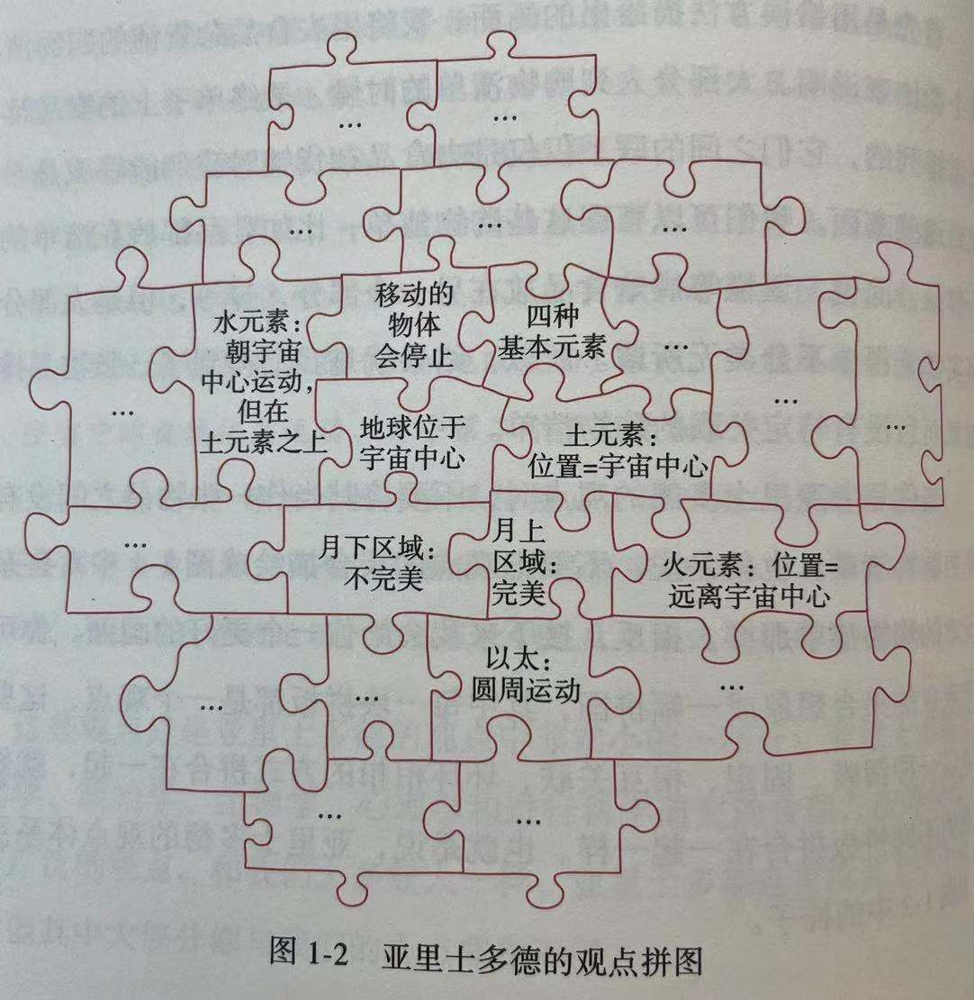
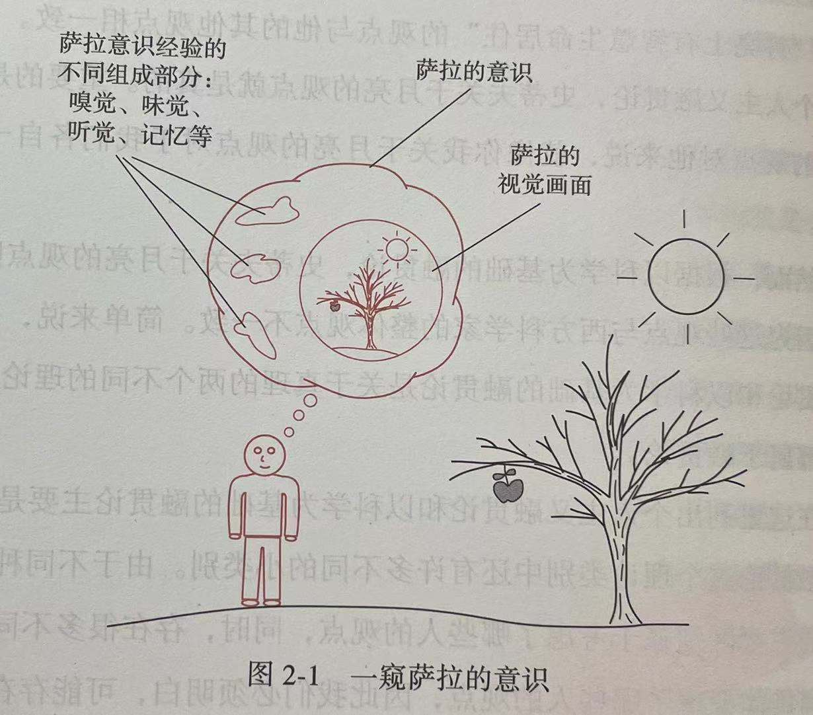

第一部分 基础命题
第1章 世界观
2 如果要给出一个最简短的描述，我会说"世界观"指的是一个 观点体系 ，其中不同观点如同拼图的一块块拼版一样相互联结。也就是说，世界观并不仅仅是一些分离、独立、不相关的观点的集合，而是一个不同观点相互交织、相互关联、相互联结的体系。
5 当我说这些观点非随机时，我的另一层意思是这些观点组成了一个相互关联、环环相扣的观点 体系 。
6
7 拼图这个比喻可以体现我在使用"世界观"这个概念时的主要特点。首先，拼图并不是独立的、相互隔离的；相反，拼板之间是有内在联系的。一块拼版与其旁边的拼版相互咬合，旁边的这块拼版又与旁边的拼版咬合，以此类推。所有的拼版是相互联结、相互关联的，整体结果就是我们得到了一个体系，体系内的每个部分相互拼合，形成了一个内部相互联结、相互关联，具有稳定性和一致性的整体。
8 与此相反，思考一下"地球是静止的，并且在宇宙中心"这个观点。在亚里士多德的观点体系里，这是一个核心观点。值得注意的是，这个观点之所以是核心观点，并不是因为亚里士多德对此深信不疑，而是 因为它就像一副拼图里靠近中心位置的拼版，如果把它去掉或替换掉，那么与它相关联的观点都要发生重大变化，而这反过来又会导致几乎整个亚里士多德观点体系的调整。
13 总的来说，你认为地球围绕太阳转，主要是因为这个观点可以与你观点拼图里的其他拼版拼合在一起，而相反的观点则不能放入这个拼图中。换句话说，你用来支撑这个观点的证据与你的观点拼图紧密相连，也就是与你的世界观紧密相连。
证据 . 总之， 我们只能为我们所秉持的极小一部分观点拿出直接证据。 对我们大多数观点（也许是几乎所有观点）来说，主要在于它们可以跟一个很大的、其中各个观点相互联结的观点集合拼合在一起。换句话说， 我们之所以秉持这样的观点主要是因为它们可以跟我们的世界观拼合在一起。
常识 14 简言之，从任何一个世界观自身的角度来看，这一世界观的观点都显而易见是正确的。所以，诸如"我们的基本观点看来是正确的、看起来是常识性的、看起来显然是对的"这类事实，都不是特别好的证据，不能证明这些观点是正确的。
. 这就带来了下面这个有趣的问题：毫无疑问，亚里士多德世界观被证明是严重错误的。地球不是宇宙中心，物体的运动特征不是由其内在的"基本性质"决定的，等等。重要的是，并不是每个单独的观点错了，而是由这个观点体系组成的拼图被证明是错误的。现在我们所认为的宇宙与亚里士多德世界观里所归纳出的宇宙完全不同。然而，尽管这些观点不正确，但它们组成了一个具有一致性的观点体系，这一体系里的观点在近2000年的时间里一直看起来显然是正确的，而且成了常识。
第2章 真理
澄清问题
19 正如橡树大概具有的某些共同特点决定了这些树是橡树，真的叙述（或真的观点）大概也具有某些共同点，使它们成为真的叙述（或真的观点）。而这就是我们所感兴趣的核心问题：真的叙述（或观点）有什么共同点而可以使它们成为真的？
多年来，已有大量关于真理的理论，作为这个核心问题可能的答案被提出。这些理论中的大部分都可以被划为两类。我们将把第一类理论成为 真理符合论 ，而把第二类称为 真理融合论 。
真理符合论
20 概括地说，根据真理符合论，决定一个真的观点为真的因素是这个观点与现实相符合。决定一个假的观点为假的因素是这个观点没能与现实相符合。
真理融贯论
21 根据真理融贯论，决定一个观点为真的因素是这个观点与其他观点连贯一致，或紧密结合。
融贯论的不同种类 22 需要明确的是，在个人主义融贯论中，真理是相对于所关注的个人的。
. 如果我们选择关注某个群体的观点集合，那么所能得出的就是一种非常不同的融贯论，可以称之为 团体 融贯论。为了说明这一点，假设我们认为，如果一个与科学相关的观点可以与西方科学家这个群体的观点集合拼合在一起，那么这个观点就是真的。为方便起见，让我们把这个观点成为 以科学为基础的融贯论 。
真理符合论的问题和困惑 24 在考察这个难题之前，让我们暂时偏离一下正题，先来讨论一下通常被成为 知觉表征论 的理论。把它称之为"知觉理论"可能有一点夸张了，因为大部分人都把它当作是关于知觉如何发挥作用的常识性观点。
.
知觉表征论是一个关于感觉的概括性理论，设计我们所有的感官，包括视觉、听觉、味觉等。
25 从本质上讲，知觉表征论的核心是：感官为我们提供了外部世界各种物体的表征（对视觉来说，这些表征大致类似图画）。同样地，这是一个几乎所有人都认为理所当然的观点。不过，这个观点同时也有些有趣的推论，而这些推论却直接影响了真理符合论。
这些推论中最重要的一个是，这个观点意味着我们每个人从某种意义上来说与这个世界都是隔绝的。更具体的说， 我们没有办法确定自身感官所提供的表征是否准确 。
评估表征的准确性 26 归根结底，要评估表针的准确性，我们需要把①表征，比如恶魔塔的照片，跟②表征所代表的的事物，比如恶魔塔本身，进行对比。
. 然而，让我们再看一看图2-1中萨拉的意识图解。假设萨拉想评估她关于苹果的视觉表征是否正确，要达到这个目的，她需要把苹果的视觉表征与真正的苹果进行对比。但是，萨拉 没有办法这么做 。萨拉不能把苹果的视觉表征与真正的苹果进行对比的原因是 她无法从自己的意识中走出来 。
. 萨拉无法从自己的意识经验中走出来，来对比自己意识经验里的东西和让她产生这个意识经验的东西。简单地说，萨拉似乎无论如何都无法对比苹果的视觉表征和真正的苹果，因此也就无法评估苹果的视觉表征是否准确。
27 这个推论说明，我们根本没没有办法评估感官给我们提供的表征是否准确，或者换句话说，我们没有办法确定现实到底是什么样子的 。
29 一点提醒 注意，不要误解上述讨论的关键点。经过这些讨论，得到的结论不应该是"现实与我们所认为的完全不一样"，而应该是"我们无法确定现实真正的样子。" 如果我们无法确定现实真正的样子，那么随之而来的问题就是，如果真理符合论是正确的，那么我们就永远无法确定一个观点，或者至少是关于外部世界的一个观点，是否是真的。
真理融贯论的问题和困惑
. 让我们从个人主义融贯论开始讨论。不要忘了，根据这个理论，如果一个观点可以与某个人整体的观点集合拼合在一起，那么这个观点对于这个人就是真的，如果不能拼合在一起，那就是假的。
30 总之，没有独立存在的真理，确切的说，真理都是相对于某个个体而言的。
. 总之，个人主义融贯论是一种极端的"一切皆有可能"的相对主义。虽然并不能因此一概而论地认为个人主义融贯论都是不正确的，但值得注意的是，大部分人都认为这样具有如此强的相对性的视角是无法接受的。
现在考虑一下团体融贯论。回想一下，根据团体融贯论，如果一个观点可以与某一群体（具体是哪个群体要根据所涉及的融贯论版本来决定）整体的观点集合拼合在一起，那么这个观点就是真的。这种理论的主要问题是：
（1）没有考虑一个群体可能秉持错误观点的可能性；
（2）没有办法明确哪些人可以算作群体的一分子；
（3）对任何一个群体来说，都不存在一个由整个群体共同秉持的、具有一致性的观点集合。
32 总结一下，个人主义融贯论似乎会陷入一种让人无法接受的相对主义。另一方面，团体融贯论似乎避免了相对主义的问题，但同时又带来了几个新的、不容忽视的问题。所以，不管是真理融贯论还是真理符合论，对于真理的核心问题，都无法提供让人完全满意的答案。
哲学思考：笛卡尔和我思
33 在《沉思录》中，笛卡尔最初的目标之一是找到一个绝对确定的、可以在其之上进行知识构建的基础。也就是说，笛卡尔想找到一个或几个自己感到可以完全确定的观点，然后，谨慎而富有逻辑地把其他全部知识在这个确定的基础上构建出来。
34 事实上，让笛卡尔可以完全确定的是每当他思考"我是，我存在"时，笛卡尔一定是在思考，这样才能想到这句话，这就是他为什么一定至少作为一个思维主体而存在。
. 现在让我们回到笛卡尔的根本策略。回想一下，笛卡尔的想法是要找到某些确定的观点，并由这些观点谨慎推演出其他观点，从而构建出一个具有完全确定的基础的知识结构。现在，你大概可以猜出笛卡尔将面临的主要问题： 这个基础太小了 。
第3章 经验事实和哲学性 / 概念性事实
初步观察
37 这一类以观察为基础的事实，通常被称为经验事实。
38 请注意，你认为"抽屉里有一支铅笔"的原因，与认为"书桌上有一支铅笔"的原因 不可能 是相同的。你关于书桌上铅笔的观点是基于直接的、进过观察得来的证据，而"抽屉里有一支铅笔"的观点不可能基于任何直接的、进过观察得来的证据。毕竟，你无法看到、摸到或观察到抽屉里的那支铅笔，所以关于这个观点，你不可能有直接的、经过观察得来的证据。那么，你为什么如此坚定地认为抽屉里有一支铅笔呢？
我猜测你之所以这样认为，是 源于你看待这个世界的方式 。我们大部分人无法想象物体在我们观察不到的时候就不再存在了。
. 所以，请注意，我们认为"书桌上有一支铅笔"和认为"抽屉里有一支铅笔"的原因有实质性区别。一个观点是以直接的、经过观察得来的证据为基础，而另一个则主要源于我们对自己所生活的世界所秉持的看法。尽管对"书桌上有一支铅笔"和"抽屉里有一支铅笔"的观点，我们深信不疑的程度可能是一样的，但我们秉持这两个观点的原因却有实质性差别。
这与科学史和科学哲学又有什么关系呢？正如前面提到过的，一个科学理论必须尊重相关事实。但在看待科学史的各个理论和这些理论需要尊重的事实时，从事后分析的角度，我们可以清楚地看到，某些事实—— 尽管人们认为是比较明确的经验事实，但其实更多的是依赖于人们对自己所处世界的一些哲学性 / 概念性判断。
39 这一类事实，也就是人们深信不疑的一些观点，很大程度上依赖于我们对所生活的世界的哲学性 / 概念性认识，我通常称之为"哲学性/概念性事实"。然而，在这里，我们仍需要倍加小心。
重点是，一边是经验事实，另一边是哲学性 / 概念性事实，它们并不是绝对界限分明的两个类别。换句话说，大部分观点都不能简单归为一类或另一类。相反，大多数观点的基础都既包括经验性的、通过观察得来的证据，也包括我们对所处世界更概括性的认识。
40 对于我们所秉持的大多数观点，我们把其中大部分都当作事实，这些事实在连续统里的位置都在最明确的经验事实和最明确的哲学性 / 概念性事实之间。也就是说，我们秉持这大多数观点的原因，一方面是有经验性的、通过观察得来的证据，另一方面是这些观点能与我们的整体观点拼图拼合在一起。
关于术语的一点说明
42 对"观点"这个术语，情况是相似的。把事实和观点区分开来就意味着两者之间存在相当清晰的区别，也就意味着事实是事实，而观点仅仅是观点。然而，两者之间实际上没有这样一个明确的区别，至少在一个人的生命过程中或者一个人自身的世界观中不会有这样的区别（在这里，可以再考虑一下"书桌上的铅笔和抽屉里的铅笔"的例子）。从一个人自己的世界观来看，那些他感到深信不疑而又有强力证据支撑的观点似乎就是事实。
结语
. 我想再次强调一下之前提到的一点，不要把经验事实和哲学性 / 概念性事实看做两个泾渭分明的类别。大部分观点的基础都是既包括经验性证据，又包括对我们所居住的这个世界更一般性的认识。
43 同时，把一个事实称为哲学性 / 概念性事实并不意味着这个事实是不正确的。过去的很多哲学性 / 概念性事实后来确实被证明是错误的，毫无疑问，我们的某些哲学性 / 概念性事实将来也会被证明是错误的。但是，我们希望，它们大多数可以经得起时间的考验，可以被证明至少或多或少有些正确的部分。换句话说，经验事实与哲学性 / 概念性事实之间的区别并不取决于这些事实是否被证明是正确的。两者之间的区别在于，我们根据什么类型的原因来相信这些事实。
第4章 证实与不证实证据和推理
证实推理
46 如果我们用字母T代表某个理论，字母O代表以理论T为基础得出的一个或几个语言，那么，我们可以用下面这个示意图来表现这个推理过程：
如果T，那么得出O
O（O是正确的）
所以 T（非常有可能是正确的）
归纳推理和演绎推理
48 证实推理是一种归纳推理，而不证实推理则是一种演绎推理。
49 在一个好的归纳推理过程中，即使所有前提条件都是真的，所得出的结论也有可能是错的。
相比之下，在一个好的演绎推理过程中，真的前提条件就保持了真的结论。也就是说，在一个好的演绎推理论证过程中，如果所有前提条件都是真的，那么其所得出的结论就一定是真的。
52 下面这个示意图可以更准确地表现不证实推理模式：
53
如果T，且 \(A_1\) ， \(A_2\)， \(A_3\)，... ， \(A_n\) ，那么O
O是不正确的
所以 T是不正确的，或者 \(A_1\) 是不正确的，或者 \(A_2\) 是不正确的， \(A_3\) 是不正确的 ...... 或者 \(A_n\) 是不正确的。
这是一个更准确的示意图，接下来当我谈到不证实推理模式时，我们的脑海中出现的就将会是这个示意图。
在上面的这个示意图中，\(A_1\) 、 \(A_2\)，等代表的就是人们通常所说的辅助假设。辅助假设很关键，但通常是不证实推理模式中的隐含的部分。辅助假设很关键只是因为如果没有它们，我们就不能冀希望得到想要研究的观察结果。让我们换个稍有些不同的说法，从某种程度上说，我们需要通过辅助假设来从示意图中的"如果"的部分，得出"那么"的部分。也就是说，如果 我们有某个理论，又有某个情况，而且所有隐含的辅助假设都正确，那么 我们就可以冀望于观察到某种结果。
54 然而，通常我们所面临的问题是，在存在不证实推理证据时，在什么情况下放弃整个理论更合理，而在什么情况下摒弃一个或几个辅助假设更合理。这个问题非常难以回答，而且重点是，没有什么秘诀可以帮助我们来作答。
第5章 奎因-迪昂论点和对科学方法的意义
奎因-迪昂论点
观点集合和经验的裁判 58 考虑到辅助假设所扮演的角色，当我们进行一个实验时，比如验证某个特定假设的实验，我们并不是真的只对单个假设进行验证。事实上，重点是，这个实验更像是验证主要假设以及周围所伴随的辅助假设。因此，我们通常所验证的其实是一个观点集合。在面对不证实证据的时候，可以摒弃或修改集合中的任意一个观点。
. 我们在前面提到过奎因的说法，而这就是奎因说法背后的关键点，也就是：我们的观点并不是单独而是作为整体来面对经验的裁判。
59 如果面对与我们所秉持观点相悖的证据，那么任何观点，包括核心观点，都不可能免受修改。当然， 我们通常更愿意修改比较靠近外围的观点，然而奎因的观点是，任何观点原则上都会被修改。
判决性实验 60 然而， 如果验证通常都是针对观点集合的，而且如果面对不证实证据时总可以摒弃辅助假设而不是摒弃整个理论，那么似乎判决性实验通常是不可能的。原因很明确：判决性实验的目标是证明两个竞争理论中至少有一个做出是错误预言，在任何一个这样的实验中，做出错误预言的理论仍然可以保留，所以摒弃的只是某个辅助假设。同样地，正如我们在前一章中提到过的，摒弃某个辅助假设并不是摒弃整个理论通常都是非常合理的。
. 对奎因-迪昂论点的这个方面还存在另外一种解读，那就是认为这个论点的这个部分所表达的观点是， 任何 实验结果，无论是什么，都可以与 任意 一个理论相吻合，这个表述更强有力，也更具争议。
理论的不充分确定性 61 把所有这些因素放在一起，我们就得到了一个观点，那就是现有数据，包括所有相关实验的结果，都 绝对不可能完全确定某个理论是正确的 。
. 简言之，很多相互竞争的理论通常都可以与所有现有证据相吻合。对此，通常的描述是，根据现有数据， 理论都是不充分确定的 。
62 根据这种更激进的不充分确定性概念，科学理论和科学知识都是"社会建构"，或多或少都是有相关社区所发明的。根据这个观点，相对于物质世界，科学理论与社会条件之间的联系更为紧密，而且反映的也是社会条件，而不是物质世界。
. 在这个概念中，餐桌礼仪和科学理论都是社会的反映，从"正确"这个词任何深层或客观的意义上来说，不能说一个理论是独一无二"正确"的理论。
亚里士多德的公理化方法 64 这样的方法通常被称为公理化方法，也就是说，这些方法是基于从某个意义上说是确定的或必为真的基本原则的演绎推理。
65 正如前面提到的，对亚里士多德来说，科学知识是确定的知识，或者换一种说法，三段论链条中最后一个结论必须是必定为真的。请注意这个概念与现代科学知识有显著的不同。现在，科学的目的通常被认为是提供可能正确的理论，但是我们并不期待科学能保证这些道理是正确的（我们认为这是不可能的）。然而，对亚里士多德来说，科学并非如此，在17世纪前，对科学知识的普遍看法也不是这样的。科学知识必须是确定的知识，而确定性在很大程度上是因为它们是通过演绎推理得来的。
66 当然，三段论链条不可能无休止地延长，所以在某个点上肯定有某些前提是必定为真的，但本身并不是通过为止更高的三段论链条得到的。 这些起始点，也就是这些本身必定为真的前提 ，通常被称为 第一原则 。
笛卡尔的公理化方法 68 尽管，一个人至少可以在"我存在"（至少作为一个思考主题存在）的主张上找到某些确定性，对这一观点可能有更多共识，但是这个观点太单薄了，无法成为进行知识构建的基础。
波普尔的证伪主义 . 总的来说，波普尔认为科学强调的应该是尝试对理论进行反驳，而不是证实理论。
69 正如前面提到过的，波普尔 并没有特别强调证实证据。对他来说，一个成功的科学理论，其特征并不是有大量证实的证据，相反，一个成功的科学理论应是：即使尝试反复通过对明确而夸张的预言进行验证来反驳，也仍然能站得住脚。 这种证伪主义方法，也就是强调尝试对理论进行证伪而不是证实的方法，就是波普观点的核心。
假设演绎法 70 假设演绎法所关心的通常不是假设本身是如何形成的，而是对假设进行辩护或证实。在科学哲学中，这个区别（也就是假设是如何形成的与假设是如何被证明或证实之间的区别）通常被描绘为 发现语境 和 辩护语境 的差异。发现语境通常被认为是两者之中更复杂的那个，在后续的章节中我们将会看到，实际上，假设与理论形成的方式出人意料地多样和复杂。
71 同样地，假设演绎法，归根结底也就是证实和不证实推理，在科学中毫无疑问扮演了一个重要角色。然而，基于我们在前面探讨过的命题，尽管假设演绎法是在科学中运用的一个方法，但称它 就是 科学方法却会令人产生误解。
第6章 哲学插曲：归纳的问题和困惑
73 当我们进行推理时，比如，当我们进行论证的时候，我们的论证过程几乎总是包含隐含的前提。正如其名称所示，隐含的前提就是为了使推理看起来合理而必需的前提，但这些前提都是暗示的而不是明确表达出来的。
75 换句话说， 如果"未来将继续像过去一样"是不正确的，那么过去的经验对未来就没有指导意义 ，因此，对未来的推理就不可信了。
76 现在，如果"未来会继续像过去一样"这句话是任何一个关于未来的推理中所必需的隐含前提，那么很明显我们对关于未来的推理有多少信心，关键取决于我们对前面这句话的信心有多少。显然，接下来的问题就是：我们为什么会认为未来会像过去一样？
. 然而，请注意这是一个关于未来的推理。同样地，任何关于未来的推理，包括前面列出的这个，都依赖于一个隐含前提，那就是未来会继续像过去一样。当这个隐含前提被明示出来时，上面的推理可以更好地概括如下：
在我们过去的经验中，未来像过去一样。
未来会继续向过去一样。
所以 未来很有可能继续像过去一样。
然而，上面这个推理显然是个循环，也就是说，它把整个推理过程试图建立的结论当做了前提之一。换句话说，前面概括出的这个推理是否为真取决于这个推理本身得出的结论是否为真。这很显然是循环的，因此不能提供足够的理由使推理的结论得到认可。
. 休谟 的问题是，我们是否可以 从逻辑上 为我们关于未来的推理提供证据，而他的答案是：我们不可以。
第7章 可证伪性
基本概念
85 通常，可证伪性是对某个特定理论所秉持的态度，而不是这个理论本身的一个特点。
. 因此，"一个理论本身是不可证伪的"这一说法通常并不准确，实际上，关键的因素是你对这个理论的态度，而且正是这个态度决定了你认为这个理论是可证伪还是不可证伪的。
复杂因素
88 在这里，非常关键有很有难度的一个命题是，什么样的证据可以算作是有意义的证据。这是微妙而又重要的一点，并在科学史和科学哲学领域一次又一次出现。这一点非常重要，因此值得我们在此重申一下：在几乎所有现实生活的实例中，人们主要 分歧点 并不是 一方或另一方在面对足够多证据时是否愿意放弃自己的理论，而是 什么样的证据可以算是有意义、最重要的证据 。
重点是， 人们所认为的最有意义、最重要的证据与其整体世界观是紧密相连的。 史蒂夫对经文的坚持在他的观点拼图中处于核心位置。如果史蒂夫放弃对经文的坚持，则不可避免地要对他的观点拼图进行中重大修改，或者说，实际上是要替换掉他整个观点拼图中绝大部分拼版。
第8章 工具主义和现实主义
预言和解释
92 存在一个普遍共识，那就是我们认为理论的另一个特征就是解释相关数据的能力。然而，尽管解释的重要性已毋庸置疑，但人们对"什么样的解释才算是充分的解释"并没有达成一致性意见。
. 为了澄清这些命题，科学哲学家有时要对"解释"（有时被成为"正式解释"）和"理解"进行区分。相比之下，"解释"的含义最窄。更具体地说，如果你根据某个理论预测了某个数据或观察结果，那么你就可以说这个理论解释了这个数据或观察结果。在这种情况下，解释是某种追溯预言。
93 正如前面提到过的，有一个普遍的共识是，对任何一个适当的理论，预言和解释是非常重要的要求。尽管解释和预言是理论最重要的特点，但仍然值得注意的是，这并不是我们唯一希望从理论中得到的特点。
94 对 工具主义者 来说，一个适当的理论可以给出预言和解释，至于这个理论是否反映或模拟现实世界，并不是一个重要的考量。而对 现实主义者 来说，一个合理的理论必须不仅可以给出预言和解释，而且要反映现实事物的真实情况。
97 在望远镜发明（大约在1600年）之前，人们有很好的理由来相信地球确实是宇宙的中心。
. 然而，随着望远镜的发明，以及表明地球为宇宙中心的观点是错误的证据被发现以后，这个相对和平的共存状态发生了巨大改变。
结语
98 事实上，对于工具主义角度和现实主义角度更好的归类方法就是把它们当作人们对待某个理论的态度。
99 所以，真理融贯论的支持者更倾向于秉持工具主义态度，这一点也不让人感到惊讶了。
同样地，真理符合论的支持者对于理论更倾向于秉持现实主义态度，这也一点都不让人感到惊讶。原因实际上是相同的，也就是说，如果你认为真理是与事物的真实情况相一致的，那你自然就会认为科学理论同样模仿或反映了事物的真实情况。
第二部分 从亚里士多德世界观到牛顿世界观到转变
第9章 亚里士多德世界观中的宇宙结构
关于宇宙的概念性观点
105 在所有更概念化的观点中，最重要的两个是目的论和本质论。也就是说，人们认为宇宙是有目的的，而且有本质存在。重点是目的论和本质论紧密交织在一起，交织程度之深，甚至可以令人把它们看作是同一枚硬币的正反两面。
106 一般来说，目的解释论就是从为实现一个目标、目的或功能的角度而给出的解释。在上面那些例子里，要实现的目标、目的或功能都很明确：散播种子、输送血液、学习和调节体温，这些都属于目标、目的或功能。
现在，让我们把上面的解释与机械解释论进行一下对比。机械解释轮是一种不从目标、目的或功能的角度提出的解释。举个例子，假设我扔了一块石头，如果我们提出“为什么石头会下落”的问题，那么值得注意到是，这个解释里并没有任何目标、目的或功能的意味。石头的下落没有目标或目的，也不涉及任何功能。石头只是一个受外力作用的物体。这种不涉及目标、目的或功能的解释就是机械论解释。所以，总的来说，目的论解释是从目标、目的或功能角度提出的解释，而机械论解释则是不使用目标、目的和功能的解释。
107 值得注意的是，对很多问题来说，目的论解释和机械论解释都是行得通的。
. 我比较详细地探讨了目的论的解释，因为目的论解释很清晰地表明了我们和我们的前人之对宇宙的概念化认识上的区别。在亚里士多德世界观中，在现代科学中，目的论解释呗认为是合理的科学解释，这与现代科学形成鲜明对比，在现代科学中，机械论解释占主导地位。
(未完待续)